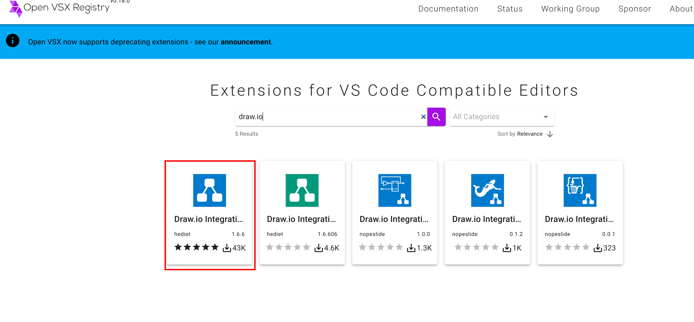
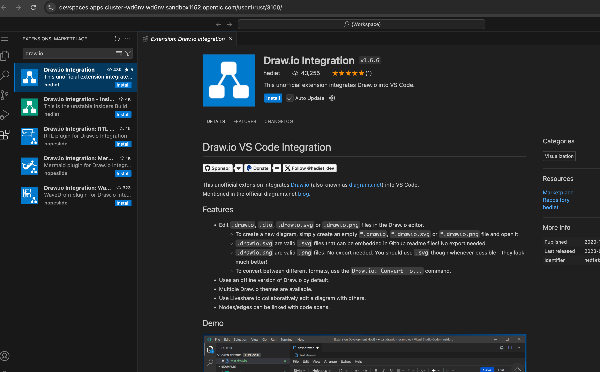
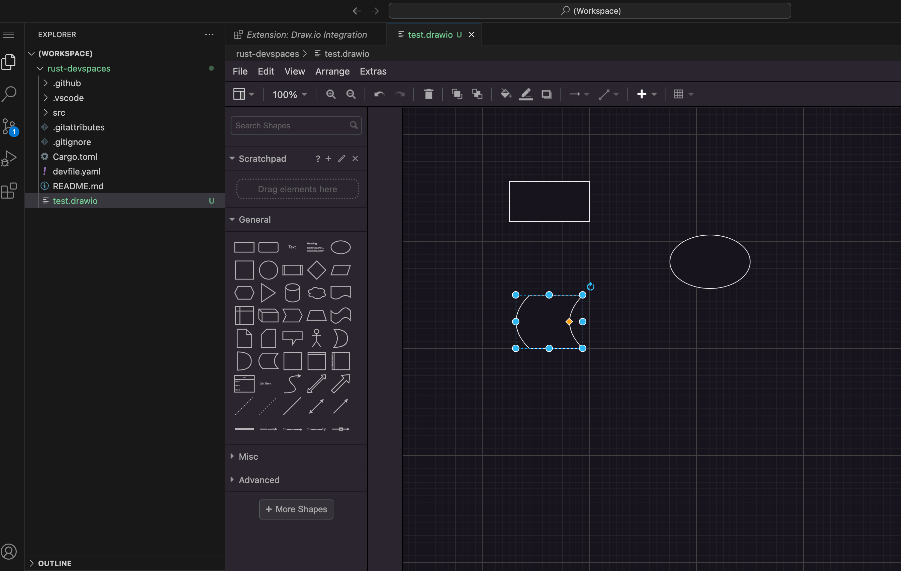

Plugin Registry in Dev Spaces
IDEs like VSCode are built on a small core focusing on working with text, with most of the IDE functionality provided by plugins. The plugins are written in JavaScript or TypeScript and can be loaded into the IDE to provide new features and functionality.
Similar to container images served from a container registry, IDE plugins are maintained in a Plugin Registry. The plugin registry offers a REST API for clients to search and install plugins.
|
Plugins are also sometimes referred to as extensions. They both mean the same thing - A component to extend the core IDE with new features. |
As far as the VSCode IDE is concerned, there are three different plugin registries.
Visual Studio Marketplace (https://marketplace.visualstudio.com)
It offers plugins for a wide range of open source as well as commercial, proprietary Microsoft products. Owned and operated by Microsoft. Microsoft controls the content, guidelines, and distribution. Red Hat OpenShift Dev Spaces does NOT use this registry.
Although many plugins are free, the platform itself is proprietary, and Microsoft collects telemetry data from your IDE. Plugins in the Marketplace are licensed under terms dictated by each publisher, and Microsoft can place restrictions on who can access content. This registry contains the largest number of plugins/extensions.
Open VSX Registry (https://open-vsx.org)
An open source plugin registry hosted by the Eclipse Foundation. Specifically designed for Visual Studio Code and compatible editors, particularly those that are open-source, and not directly tied to Microsoft. It provides an open alternative to the proprietary Visual Studio Marketplace. It has no restrictions on accessing extensions, making it available to any editor or IDE that supports the VS Code extension model.
Open VSX provides an open, community-driven alternative, especially valuable for open-source editors, and those who prefer not to rely on Microsoft license restrictions, infrastructure and telemetry. Red Hat OpenShift Dev Spaces can be configured to use this registry. It contains a lot of useful plugins, but not as many as those available in the Visual Studio Marketplace.
Embedded Open VSX Registry
An embedded instance of the Open VSX registry that runs on OpenShift (installed as part of the Dev Spaces operator) to mainly support private/on-premise, air-gapped, offline, and proxy-restricted environments. The embedded Open VSX registry contains only a subset of the extensions published on the public Open VSX registry. You can build a custom embedded registry instance and add more plugins to your set up.
|
The embedded Open VSX registry is configured as the default option in Dev Spaces. Many of the popular plugins you use in your local Visual Studio Code instance are NOT available by default!. You need to either enable the Open VSX public registry in your Dev Spaces configuration, or create and deploy a custom instance of the embedded Open VSX registry with the plugins that you need in your Workspace. |
Lab: Enabling the Public Open VSX Registry
In this hands-on lab, you will enable Dev Spaces to fetch plugins/extensions from the public Open VSX registry at https://open-vsx.org.
-
Log in to the OpenShift cluster as the
adminuser using theocCLI.$ oc login -u admin OpenShift_API_URL -
Verify that an embedded plugin registry instance is running in the cluster
$ oc get pods -n openshift-devspaces NAME READY STATUS che-gateway-6757dcd74f-z6798 4/4 Running devspaces-587dc9fbdd-vzr75 1/1 Running devspaces-dashboard-d78c7fbdd-t2fvf 1/1 Running ... plugin-registry-b7fc7456c-96csx 1/1 Running -
Verify that Dev Spaces uses the default embedded Open VSX registry. The default plugin registry is configured in the
devspacesCheCluster CR YAML resource.$ oc get checluster/devspaces \ -n openshift-devspaces \ -o jsonpath='{.spec.components.pluginRegistry.openVSXURL}' ' 'An output of blank (' ') for the openVSXURLattribute indicates that the default embedded registry is in use. Alternatively, this field can contain the URL of the Open VSX registry from which plugins should be fetched. -
Log in to the Dev Spaces dashboard as the
user1user, and create a workspace. -
Search for an extension, for example, the
draw.ioplugin for drawing technical diagrams. This plugin does not exist in the internal plugin registry. You should see a message that saysNo extensions found. -
Go to https://open-vsx.org, and search for the
draw.ioplugin.Figure 4. Search for draw.io plugin -
The limited set of plugins available in the embedded plugin registry is configured in a JSON file at https://github.com/redhat-developer/devspaces/blob/devspaces-3.16-rhel-8/dependencies/che-plugin-registry/openvsx-sync.json. You can also check the list of extensions from the OpenShift web console by accessing the terminal in the
plugin-registrypod, and then viewing the JSON file in the container at the location/openvsx-server/openvsx-sync.json.Replace the devspaces-3.16-rhel-8string in the URL with the matching version of Dev Spaces that you are running. Check the branch names in the https://github.com/redhat-developer/devspaces repository for your Dev Spaces version. -
Stop the running workspace from the dashboard.
-
Change the
.spec.components.pluginRegistry.openVSXURLattribute and point it to the public Open VSX website.$ oc patch checluster/devspaces \ -n openshift-devspaces \ --type='merge' \ -p '{"spec":{"components":{"pluginRegistry": {"openVSXURL": "https://open-vsx.org"}}}}' checluster.org.eclipse.che/devspaces patched -
Restart the previously stopped workspace.
-
Search for the
draw.ioextension again. You should now see the plugin listed in the left panel. ClickInstallnext to the plugin to install it in the Workspace.Figure 5. Draw.io extension in Workspace. -
Switch back to explorer mode and create a new file named
test.drawioat the root of the project. The plugin’s Drawing palette opens up. You should be able to create diagrams from within the workspace.Figure 6. Draw.io diagram -
Clean up. Delete workspace.